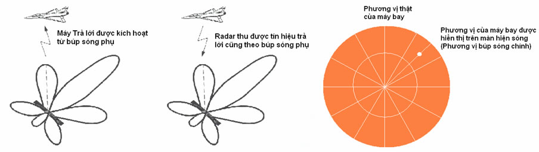

RSM 970- GIỚI THIỆU CHUNG |
KHẮC PHỤC HIỆN TƯỢNG ĐA TRỊ THEO PHƯƠNG VỊ Giản đồ hướng của Anten radar thứ cấp luôn tồn tại các búp sóng phụ (side lobe), vì vậy có khả năng máy trả lời trên máy bay được kích hoạt bởi tín hiệu hỏi phát ra từ búp sóng phụ và radar cũng thu được tín hiệu trả lời theo búp sóng phụ. Lúc này trên màn hiện sóng của radar điểm dấu của máy bay vẫn được hiển thị trên phương vị của búp sóng chính, trong khi thực tế nó nằm ở phương vị của búp sóng phụ.  Hiện tượng này được gọi là hiện tượng đa trị theo phương vị. Nguyên lý chung để khắc phục hiện tượng này là khử tín hiệu trả lời nhầm ở máy Hỏi hoặc tín hiệu hỏi nhầm ở máy Trả lời. Khử tín hiệu trả lời nhầm ở máy Hỏi A - Phương pháp STC
B - Chế áp tín hiệu trả lời thu từ búp sóng phụ RSLS:
|
Khử tín hiệu hỏi nhầm ở máy Trả lời A - Chế áp tín hiệu hỏi theo hướng búp sóng phụ của anten máy hỏi ISLS |
||||
B - Hoàn thiện Chế áp tín hiệu hỏi theo hướng búp sóng phụ của anten máy hỏi IISLS
Việc sử dụng kênh chế áp thu phát toàn hướng phát các xung P1 và P2 có phân bố thời gian và biên độ như trình bày ở trên làm hoàn thiện giải pháp chế áp búp sóng phụ của anten máy hỏi nên có tên gọi là giải pháp IISLS (Improved Interrogation Side Lobe Suppression). |